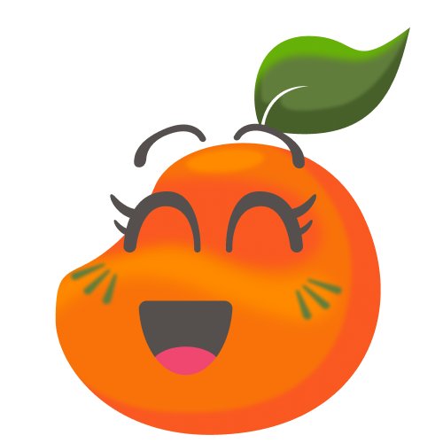
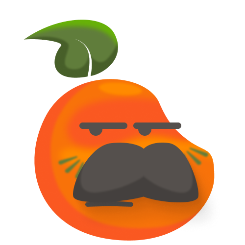
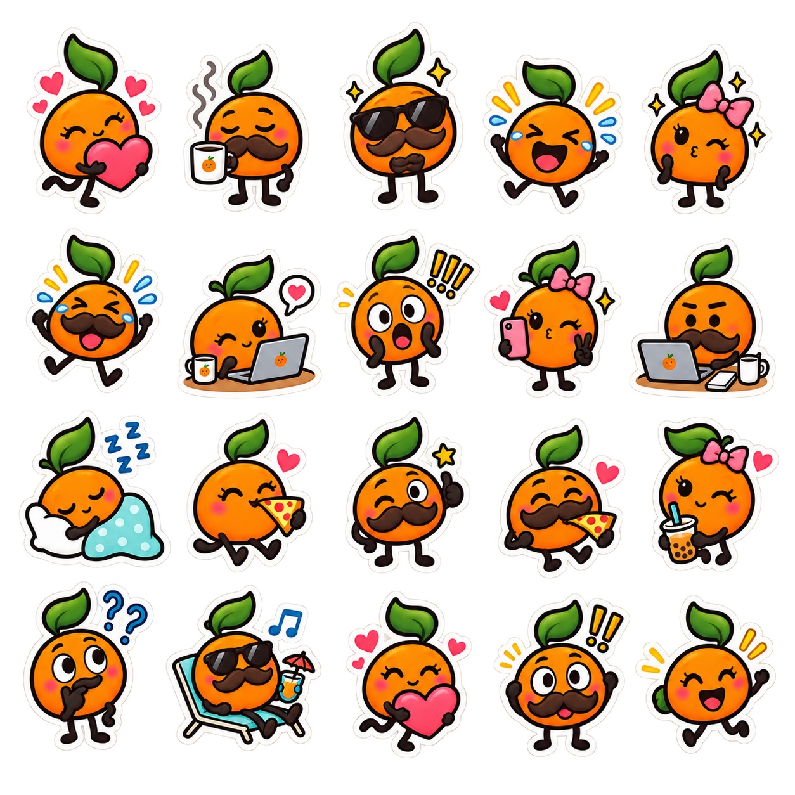

La mosca · archivo parcial
Una reacción en dos sabores.
Humor ilustrado desde República Dominicana
Historietas con sabor dominicano sobre el trabajo, el café y esos días que se ponen de lo más chévere.
Leer historietas

El archivo de Mandarinita
De nuestras primeras ocurrencias a los dibujos más recientes. ¡Pasa y échales un ojo!
Una reacción en dos sabores.
Una charla de sofá con un giro cotidiano.
Pieza original del archivo ilustrado.
Cada trazo, firma y ocurrencia es parte de nuestra historia. Aquí los dibujos son los originales, sin retoques.
Historietas completas · archivo histórico
Aquí tienes cinco episodios completos, del primero al último cuadrito. Elige uno y léelo en nuestro archivo original.
Personajes originales
Conoce a Mandarinita y al Sr. Mandarino a través de sus ilustraciones auténticas.
Ver personajes
.ART 2026 · PORTAFOLIO
Mandarinita es un proyecto independiente de ilustración e historietas inspirado en la vida cotidiana dominicana.
BIOGRAFÍA ARTÍSTICA
Mauricio Quezada es un ilustrador y diseñador dominicano residente en Santo Domingo, República Dominicana. En 2019, junto a Yosdina García, comenzó Mandarinita, una serie de historietas digitales inspiradas en conversaciones, rutinas de oficina y los pequeños absurdos del día a día. El nombre del proyecto surgió de una conversación juguetona sobre la fruta favorita de Yosdina: la mandarina. Mandarinita se publicó por primera vez el 16 de noviembre de 2019 y fue desarrollando un elenco reconocible de frutas con rostros expresivos y personalidades distintas. El trabajo de Mauricio une ilustración, diseño de personajes, comunicación gráfica y narrativa secuencial. Además de las historietas originales, el archivo recoge experimentos de animación, stickers, bocetos y otros formatos creativos. El sitio original de Mandarinita, construido en Notion, ganó la primera edición del concurso NotionJam en abril de 2022. Mandarinita continúa como una colaboración creativa independiente arraigada en el humor dominicano y la observación cotidiana.
DECLARACIÓN CREATIVA
Mandarinita explora cómo los momentos ordinarios se convierten en historias compartidas. Un lunes complicado, una reunión que pudo ser un correo o un malentendido tomando café pueden resultar frustrantes en el momento y graciosos cuando los recordamos. La serie transforma esas experiencias conocidas en relatos ilustrados breves, con frutas de formas redondeadas, gestos exagerados y humor visual directo. Las expresiones dominicanas y la cultura de oficina le dan al proyecto su voz local, pero sus emociones pueden cruzar fronteras. Cada personaje enfrenta un mismo mundo de forma distinta: con entusiasmo, escepticismo, impaciencia o calma. Mi proceso creativo empieza al observar un detalle familiar, encontrar el giro inesperado y reducir la escena a las expresiones y viñetas necesarias para comunicarlo. No se trata de negar las dificultades cotidianas, sino de ofrecer un espacio para reconocernos y reírnos juntos.
OBRAS SELECCIONADAS · ARCHIVO
Lámina D · episodio 1: La mosca · 2019
Técnica: ilustración digital · Archivo digital · 2224 × 2224 px
Lámina B · episodio 1: La mosca · 2019
Técnica: ilustración digital · Archivo digital · 2224 × 2224 px
Lámina 5 · episodio 51: ¿Tienes hambre? · 2019
Técnica: ilustración digital · Archivo digital · 2000 × 2000 px
Escena del archivo ilustrado · 2022
Técnica: ilustración digital · Archivo digital · 1920 × 1920 px
Escena del archivo ilustrado · 2022
Técnica: ilustración digital · Archivo digital · 785 × 785 px
Una pequeña muestra de nuestro recorrido: dibujos originales de 2019 y 2022, con sus créditos y dimensiones.
La historia detrás de la fruta
Mandarinita® comenzó como una serie de tiras cómicas digitales creadas por Mauricio Quezada y Yosdina García, publicadas desde el 16 de noviembre de 2019. El proyecto creció alrededor del humor cotidiano dominicano, los personajes frutales y el gusto de contar historias dibujadas.
Explorar la página históricaUn chin de Mandarinita en tu chat
¿Te quedaste sin palabras? ¡Manda una mandarina! Aquí van siete paquetes para darle sabor a tus conversaciones.